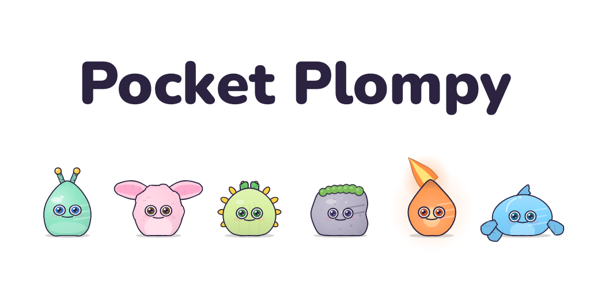
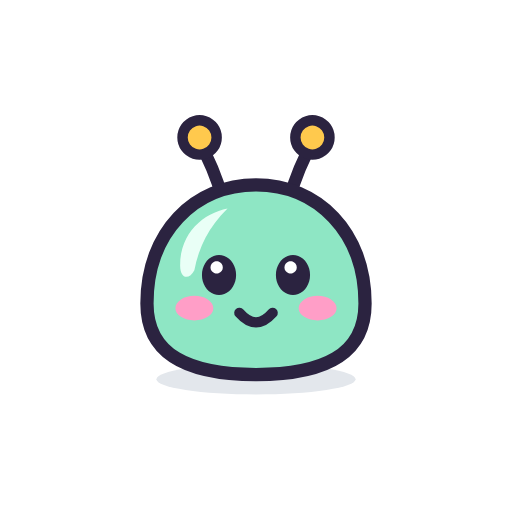

Pocket Plompy
Um pet virtual que cresce com você, muda com o seu carinho e deixa o dia mais leve.
Google PlaySobre o jogo
Tudo começa com um ovo. No Pocket Plompy, o pet cresce de verdade: de bebê bagunceiro a adulto cheio de personalidade, ele se torna quem é pelo jeito que é cuidado, e nenhum fica igual ao outro. Ele sente fome, sono e saudade, ri com cócegas e repete o que você fala com a própria vozinha. Um fliperama com vários minijogos dá moedas para roupas, móveis e veículos. Um Plompy bem cuidado deixa herdeiros, e a família cresce com o tempo, cheia de memórias.
Destaques
- Seis espécies e dezenas de formas que dependem de como o pet é cuidado.
- Ciclo de vida completo: ovo, infância, velhice, carta de despedida e herdeiros com visual misturado.
- Fliperama com minijogos (Colina Sem Fim com moto e jipe, Nave de Bolso, Doces e outros).
- Closet, decoração da casa, modo foto e o Plompy no mundo real pela câmera.
- Evento de Natal com calendário do Advento (dezembro de 2026).
- Funciona sem internet. Arte e sons 100% feitos em código.
Ficha
- Desenvolvedor
- Doldrums Studio (Brasil)
- Plataforma
- Android (Google Play)
- Lançamento
- Dezembro de 2026
- Preço
- Grátis, com anúncios opcionais que dão recompensas e compras opcionais
- Idiomas
- Português, inglês, espanhol, alemão, francês e japonês
- Público
- 13 anos ou mais
- Contato
- doldrumstudio@gmail.com
Imagens
Livres para uso em matérias sobre o jogo. Toque para abrir em tamanho original (1080×1920).


Também: ícone (512×512) · imagem de destaque (1024×500)


Pocket Plompy
A virtual pet that grows with you, changes with your care and makes every day lighter.
Google PlayAbout the game
It all starts with an egg. In Pocket Plompy, your pet really grows up: from a messy little baby to an adult full of personality, it becomes who it is through the way it is cared for, and no two turn out the same. It gets hungry, sleepy and misses you, giggles when tickled and repeats what you say in its own tiny voice. An arcade full of minigames pays coins for outfits, furniture and vehicles. A well-cared-for Plompy leaves heirs, and the family grows over time, full of memories.
Highlights
- Six species and dozens of forms shaped by how the pet is raised.
- A full life cycle: egg, childhood, old age, a farewell letter and heirs with a mixed look.
- An arcade of minigames (Endless Hill with a moto and a jeep, Pocket Ship, Candy Swap and more).
- Closet, home decor, photo mode and the Plompy in the real world through the camera.
- Christmas event with an advent calendar (December 2026).
- Plays offline. All art and sound made in code.
Fact sheet
- Developer
- Doldrums Studio (Brazil)
- Platform
- Android (Google Play)
- Release
- December 2026
- Price
- Free, with optional reward ads and optional in-game purchases
- Languages
- English, Portuguese, Spanish, German, French and Japanese
- Audience
- 13 and over
- Contact
- doldrumstudio@gmail.com
Images
Free to use in coverage of the game. Tap to open full size (1080×1920).